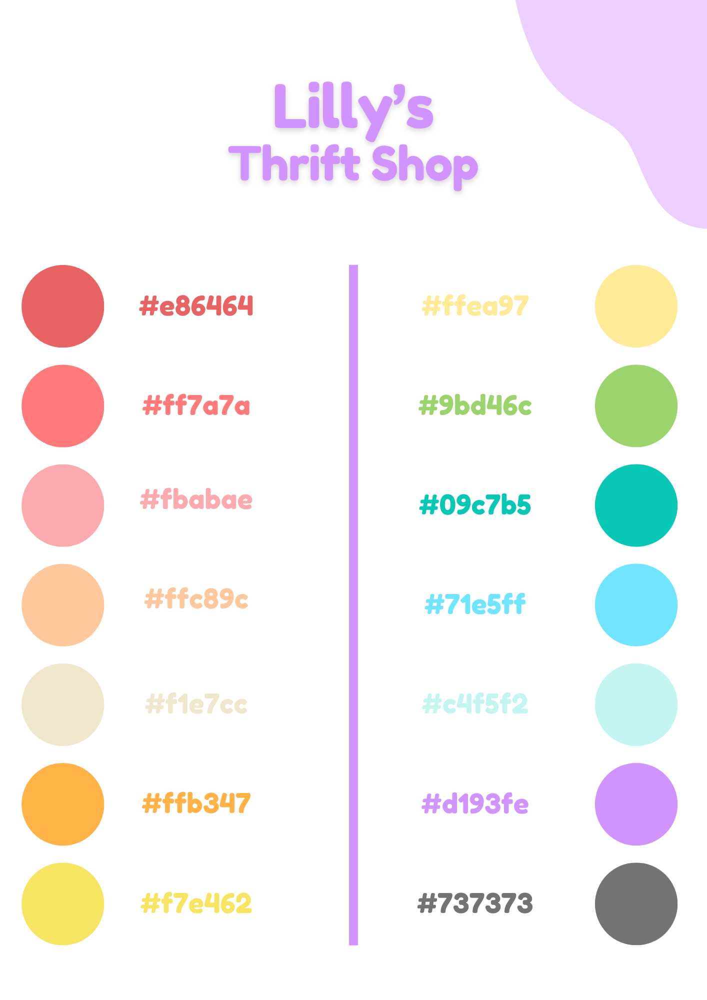

Lily's ThriftStore
End-to-end UI/UX Design for a cozy shopping experience.
Engine
Unreal Engine
Role
UI/UX Designer
Tools
Illustrator, Figma, PS
Timeline
8-9 Months
Moodboard & Aesthetics
The project started with a deep dive into the "cozy" and "pastel" aesthetic. I collected references from games like Animal Crossing to define a soft, welcoming visual language that aligns with the thrift store theme.

Initial Sketches & Planning
Before jumping into Figma, I sketched the layouts to plan the Information Architecture. This allowed me to define where each element (navigation, inventory, currency) would live to ensure an intuitive user flow.

Color Palette
A soft, pastel-based palette designed to reduce eye strain and evoke calmness.
Final UI Elements
The final elements were designed in Figma, using the established palette. I focused on rounded corners, soft shadows, and high contrast for readability, ensuring a playful yet clean look.